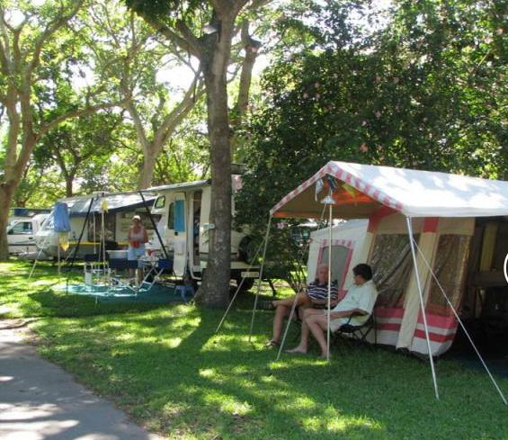
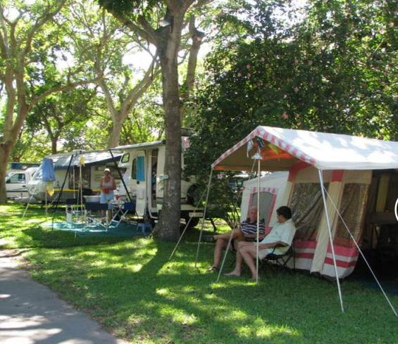

Camping Areas
Wolfkop camping village
A collection of camping villages on the banks of the Olifants River, surrounded by lush green lawns and mountainous terrain. What’s more, the tents are erected on your behalf, saving you the trouble of lugging around heavy camping gear and making for a more comfortable camping adventure that borders on glamping.
 

Slanghoek mountain resort
Nestled in the magnificent Slanghoek Valley on the slopes of the Badsberg conservancy you will find the Slanghoek Mountain Resort. It is a haven for those who can appreciate spectacular views and the natural beauty of the indigenous fynbos. The valley offers adventure filled walks for nature lovers. To accommodate you, we have self catering chalets and a tented camp as well as camping with own tent or caravan. This valley can be visited throughout the year as each season reveals its own secret beauty.
Slangkop tented camps
Set between mountain, village and ocean, this SanParks-operated campsite provides guests with a diverse natural landscape, within easy access of civilisation. Its position on the Hoerikwaggo Trail makes it a convenient rest spot for those looking to embark on an overnight hike.